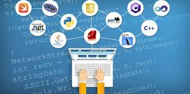
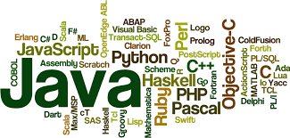
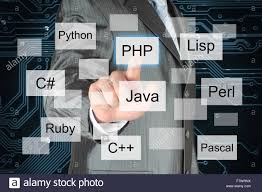
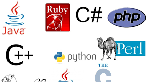

definitions of some of programming languages
links:
c

C Language is a structure-oriented, middle-level programming language mostly used to develop low-level applications.
C Language is used to develop systems applications that are integrated into operating systems such as Windows, UNIX and Linux, as well as embedded softwares. Applications include graphics packages, word processors, spreadsheets, operating system development, database
systems, compilers and assemblers, network drivers and interpreters.
c#
.jpg) Pronounced C-sharp (not C-hashtag), C# is a multi-paradigm programming language that features strong typing, imperative, declarative, functional, generic, object-oriented and component-oriented disciplines.
C# helps developers create XML web services and Microsoft .NET-connected applications for Windows operating systems and the internet.
C# used to develop a wide range of software applications that accompany Visual Studio IDE. C# the only language used by the Windows Presentation Foundation (WPF).
Pronounced C-sharp (not C-hashtag), C# is a multi-paradigm programming language that features strong typing, imperative, declarative, functional, generic, object-oriented and component-oriented disciplines.
C# helps developers create XML web services and Microsoft .NET-connected applications for Windows operating systems and the internet.
C# used to develop a wide range of software applications that accompany Visual Studio IDE. C# the only language used by the Windows Presentation Foundation (WPF).
c++
.jpg) c++ is a general purpose, object-oriented, middle-level programming language and is an extension of C language, which makes it possible to code C++ in a “C style”. In some situations, coding can be done in either format, making C++ an example of a hybrid language.
The C++ language is used to create computer programs and packaged software, such as games, office applications, graphics and video editors and operating systems.
Blackberry OS and the newest Microsoft Office suite was developed using C++.
c++ is a general purpose, object-oriented, middle-level programming language and is an extension of C language, which makes it possible to code C++ in a “C style”. In some situations, coding can be done in either format, making C++ an example of a hybrid language.
The C++ language is used to create computer programs and packaged software, such as games, office applications, graphics and video editors and operating systems.
Blackberry OS and the newest Microsoft Office suite was developed using C++.
programing language
.jpg) Computer programming languages allow us to give instructions to a computer in a language the computer understands. Just as many human-based languages exist, there are an array of computer programming languages that programmers can use to communicate with a computer. The portion of the language that a computer can understand is called a “binary.” Translating programming language into binary is known as “compiling.” Each language, from C Language to Python, has its own distinct features, though many times there are commonalities between programming languages.
These languages allow computers to quickly and efficiently process large and complex swaths of information. For example, if a person is given a list of randomized numbers ranging from one to ten thousand and is asked to place them in ascending order, chances are that it will take a sizable amount of time and include some errors.
Top Most Popular Programming Languages
Computer programming languages allow us to give instructions to a computer in a language the computer understands. Just as many human-based languages exist, there are an array of computer programming languages that programmers can use to communicate with a computer. The portion of the language that a computer can understand is called a “binary.” Translating programming language into binary is known as “compiling.” Each language, from C Language to Python, has its own distinct features, though many times there are commonalities between programming languages.
These languages allow computers to quickly and efficiently process large and complex swaths of information. For example, if a person is given a list of randomized numbers ranging from one to ten thousand and is asked to place them in ascending order, chances are that it will take a sizable amount of time and include some errors.
Top Most Popular Programming Languages
Java

Java is celebrating its 24th birthday this year and has been one of the most popular programming languages used for developing server-side applications. Java is a practical choice for developing Android apps as it can be used to create highly functional programs and platforms.
This object-oriented programming language does not require a specific hardware infrastructure, is easily manageable, and has a good level of security. Moreover, it is easier to learn Java in comparison to languages such as C and C++. No wonder, nearly 90 percent of Fortune 500 firms rely on Java for their desktop applications and backend development projects.
kotlin

Kotlin is a general-purpose programming language with type inference. It is designed to be completely interoperable with Java. Moreover, from the time Android announced it as its first language, Kotlin offers features that developers ask for. It effortlessly combines object-oriented and functional programming features within it.
The effortless interoperation between Java and Kotlin makes Android development faster and enjoyable. Since Kotlin addresses the major issues surfaced in Java, several Java apps are rewritten in Kotlin. For instance, brands like Coursera and Pinterest have already moved to Kotlin due to strong tooling support. As most businesses move to Kotlin, Google is bound to promote this language more than Java. Hence, Kotlin has a strong future in the Android app development ecosystem. Kotlin is an easy-to-learn, open-source, and swift language for Android app development that removes any adoption-related barriers. You can use it for Android development, web development, desktop development, and server-side development. Therefore, it’s a must-learn language for programmers and Android app developers in 2020.
Python
 Python continues to be one of the best programming languages every developer should learn this year. The language is easy-to-learn and offers a clean and well-structured code, making it powerful enough to build a decent web application.
Python can be used for web and desktop applications, GUI-based desktop applications, machine learning, data science, and network servers. The programming language enjoys immense community support and offers several open-source libraries, frameworks, and modules that make application development a cakewalk.
For instance, Python offers Django and Flask, popular libraries for web development and TensorFlow, Keras, and SciPy for data science applications.
Though Python has been around for a while, it makes sense to learn this language in 2020 as it can help you get a job or a freelance project quickly, thereby accelerating your career growth.
Python continues to be one of the best programming languages every developer should learn this year. The language is easy-to-learn and offers a clean and well-structured code, making it powerful enough to build a decent web application.
Python can be used for web and desktop applications, GUI-based desktop applications, machine learning, data science, and network servers. The programming language enjoys immense community support and offers several open-source libraries, frameworks, and modules that make application development a cakewalk.
For instance, Python offers Django and Flask, popular libraries for web development and TensorFlow, Keras, and SciPy for data science applications.
Though Python has been around for a while, it makes sense to learn this language in 2020 as it can help you get a job or a freelance project quickly, thereby accelerating your career growth.
PHP

PHP is widely used for server-side web development, when a website frequently requests information from a server. As an older language, PHP benefits from a large ecosystem of users who have produced frameworks, libraries, and automation tools to make the programming language easier to use. PHP code is also easy to debug. PHP is the code running content-oriented websites such as Facebook, WordPress, and Wikipedia.PHP is widely used for server-side web development, when a website frequently requests information from a server. As an older language, PHP benefits from a large ecosystem of users who have produced frameworks, libraries, and automation tools to make the programming language easier to use. PHP code is also easy to debug. PHP is the code running content-oriented websites such as Facebook, WordPress, and Wikipedia.